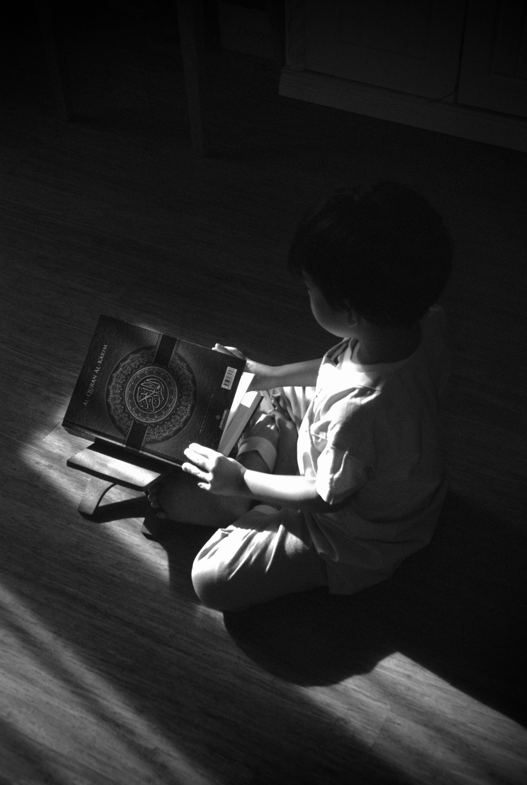

0-3 Months: Starting to Connect

Listening Skills
- Startles to loud sounds
- Quiets or smiles when spoken to
- Recognises parent's voice
- Turns toward familiar voices
- Shows awareness of different sounds
Speaking & Communication
- Makes cooing sounds ("ooo," "aaa")
- Cries differently for different needs
- Smiles at people
- Makes eye contact
- Begins to use different cries for hunger vs. tiredness
Ways to Support Development:
- Talk to your baby during daily routines (feeding, bathing, changing)
- Respond to your baby's sounds with smiles and words
- Sing gentle lullabies and nursery rhymes
- Make eye contact and use different facial expressions
3-6 Months: Sounds & Babbles Begin
Listening Skills
- Turns head toward sounds
- Responds to changes in tone of voice
- Notices toys that make sounds
- Pays attention to music
- Responds to own name (starting around 6 months)
Speaking & Communication
- Babbles with expression (sounds like conversation)
- Makes sounds like "ma," "da," "ba"
- Laughs and giggles
- Makes sounds to show joy or displeasure
- Takes turns making sounds with you
Ways to Support Development:
- Copy your baby's babbles and take turns making sounds
- Play peek-a-boo and other interactive games
- Read simple board books with bright pictures
- Name objects around the house: "Look, a cup!" "Here's your teddy!"
6-12 Months: Understanding Grows
Listening Skills
- Understands "no"
- Responds to simple requests ("Come here," "Give me")
- Recognises words for common items (bottle, ball, mommy)
- Listens when spoken to
- Turns and looks in the direction of sounds
Speaking & Communication
- Babbles with different sounds ("mamamama," "dadada")
- Says first words (around 12 months)
- Uses gestures like waving and pointing
- Copies sounds and gestures
- Uses sounds and gestures to get attention
Ways to Support Development:
- Name things during play: "That's a ball. You're rolling the ball!"
- Sing action songs like "Pat-a-cake" and "Twinkle Twinkle"
- Respond to your baby's attempts to communicate
- Look at picture books together and point to images
- Play simple games like "Where's your nose?"
12-18 Months: Words Emerge!
Listening Skills
- Points to familiar objects when named
- Follows simple instructions ("Get your shoes")
- Understands simple questions ("Where's teddy?")
- Recognises names of family members
- Enjoys listening to stories and songs
Speaking & Communication
- Uses 3-20 meaningful words
- Says "mama" and "dada" specifically for parents
- Uses words to make requests
- Imitates simple words
- Combines sounds, gestures, and words to communicate
Ways to Support Development:
- Expand on your child's words: Child says "dog," you say "Yes, big dog!"
- Read the same books repeatedly—repetition helps learning!
- Narrate daily activities: "Let's put on your coat. Arms in!"
- Give simple choices: "Do you want apple or banana?"
18-24 Months: Vocabulary Explosion
Listening Skills
- Follows two-step instructions ("Get your cup and give it to daddy")
- Points to body parts when asked
- Understands many words (more than they can say)
- Enjoys listening to longer stories
- Identifies familiar objects in books
Speaking & Communication
- Uses 50+ words by age 2
- Combines two words ("More juice," "Daddy go")
- Asks simple questions ("What that?")
- Uses some pronouns (me, mine, you)
- Speech is understood by familiar people about 50% of the time
Ways to Support Development:
- Add to their two-word phrases: "More juice" → "You want more apple juice?"
- Ask open questions: "What's the dog doing?"
- Talk about the past and future: "Yesterday we went to the park!"
- Encourage pretend play with toys and props
2-3 Years: Sentences Form

Listening Skills
- Understands many action words (run, jump, eat)
- Follows 2-3 step instructions
- Understands simple "who," "what," "where" questions
- Recognises colours and shapes when named
- Listens to longer stories with interest
Speaking & Communication
- Uses 200-1000 words
- Speaks in 3-4 word sentences
- Asks lots of questions ("Why?" "What's that?")
- Uses plurals and past tense (sometimes with mistakes)
- Speech is understood by strangers about 75% of the time
- Talks about things that happened
Ways to Support Development:
- Have conversations about experiences: "Tell me about your day"
- Model correct grammar naturally: Child says "I goed," you say "Yes, you went to the park!"
- Read interactive books and ask prediction questions
- Sing songs with rhymes and repeated phrases
3-4 Years: Complex Communication

Listening Skills
- Follows complex instructions with multiple steps
- Understands concepts like "same/different," "big/little"
- Enjoys longer stories and can answer questions about them
- Understands most of what is said at home and preschool
- Beginning to understand time concepts (today, tomorrow)
Speaking & Communication
- Uses 4-6 word sentences
- Tells simple stories
- Asks many "why" questions to learn
- Uses most speech sounds correctly (some errors still normal)
- Speech is understood by strangers almost all the time
- Can describe recent events
Ways to Support Development:
- Encourage storytelling: "Tell me a story about your toys"
- Play rhyming games and sing songs
- Have back-and-forth conversations at mealtimes
- Introduce new vocabulary words during play and reading
4-5 Years: School-Ready Skills

Listening Skills
- Understands complex sentences and directions
- Follows classroom instructions
- Understands time sequences (first, next, last)
- Can listen to longer stories without pictures
- Understands most concepts taught in preschool
Speaking & Communication
- Uses complete sentences with correct grammar
- Tells detailed stories with a clear beginning, middle, and end
- Uses adult-like grammar most of the time
- Uses all speech sounds correctly (or nearly correctly)
- Can define words and explain meanings
- Adjusts language based on listener (talks differently to baby vs. adult)
Ways to Support Development:
- Encourage elaborate storytelling and imagination
- Play word games and "I Spy"
- Discuss books and ask "why" and "how" questions
- Practice rhyming and identifying beginning sounds in words
- Have meaningful conversations about feelings and experiences